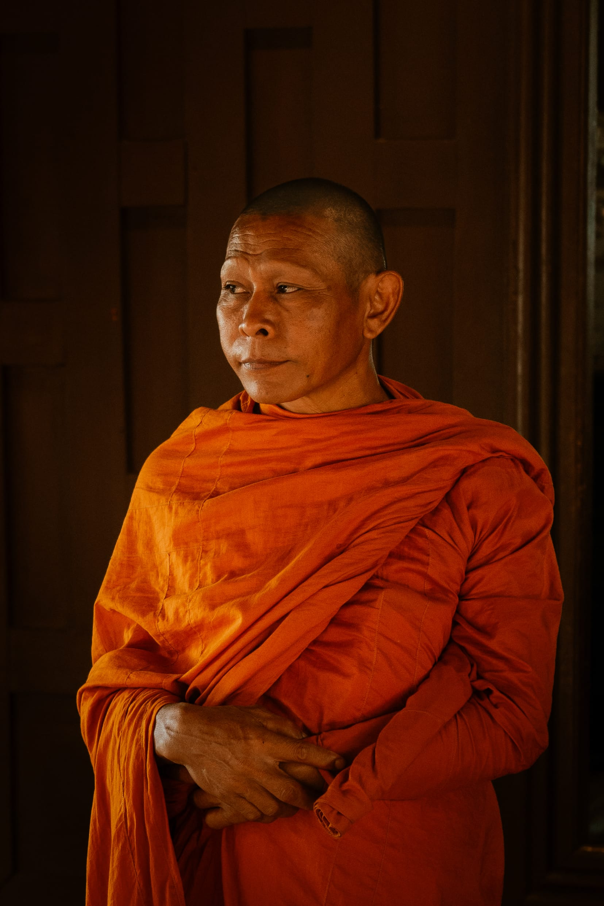
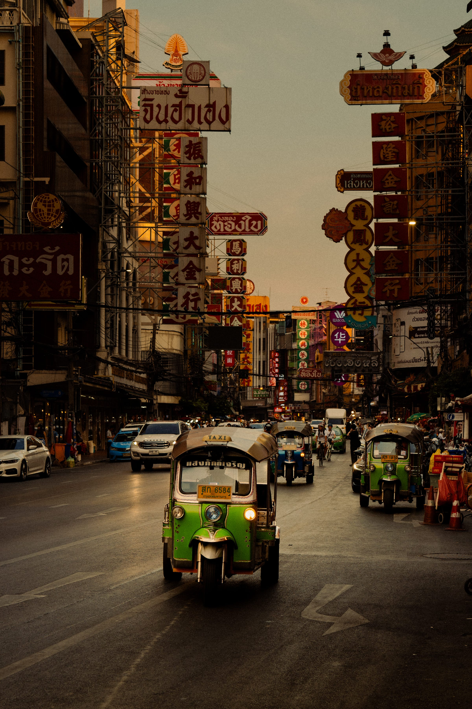
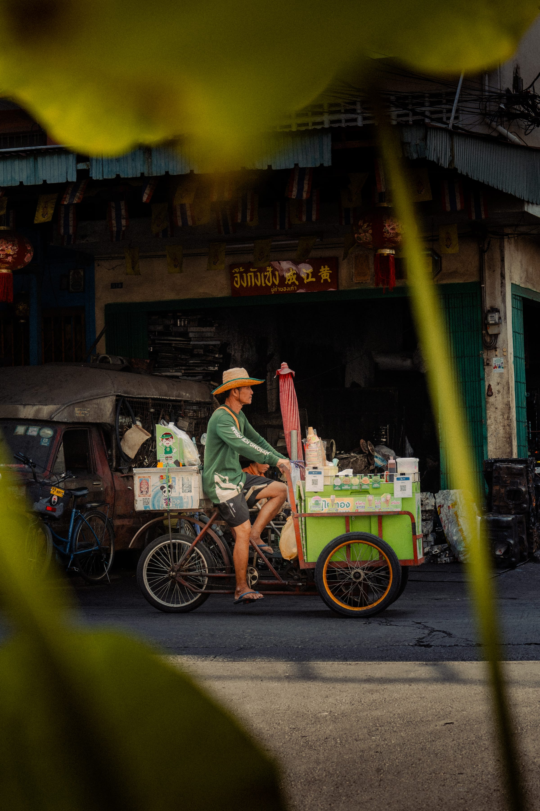
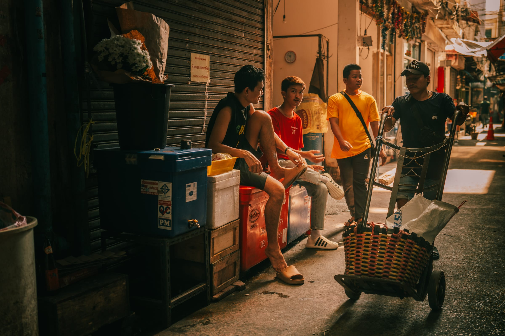
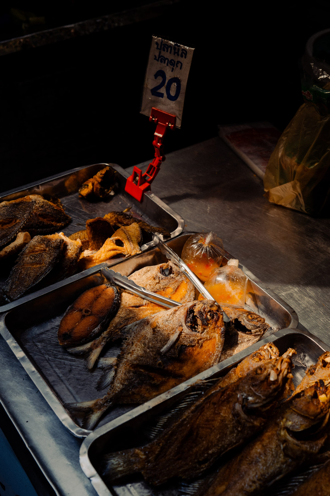
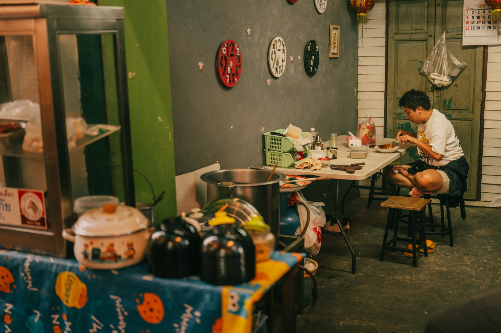
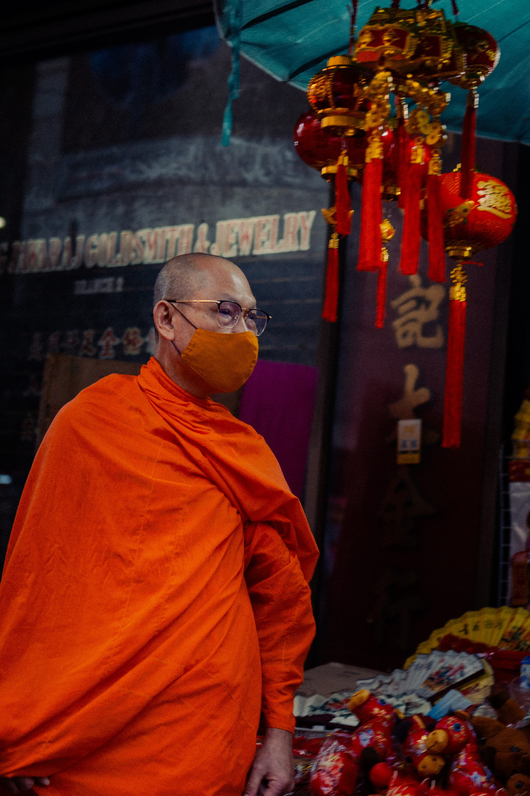
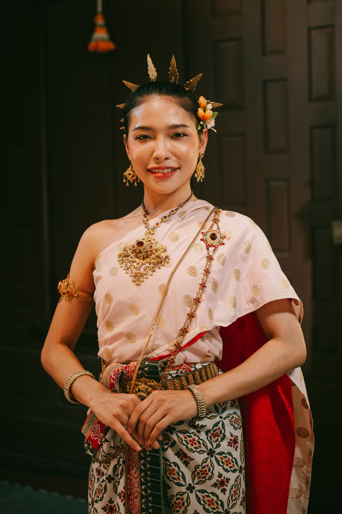
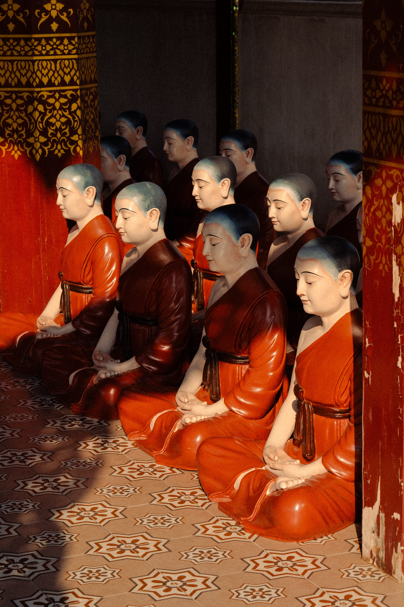

Five days in Chinatown with one camera and no plan — nine fruits we couldn’t name, a market that never quite closed, and one afternoon somewhere built to look old.
We stayed in Chinatown, which in Bangkok means Yaowarat — one road that runs on neon and engine noise and never quite goes dark. I went down into it every morning with the Leica and no particular plan, and by evening the same street had changed its mind: the fruit stalls folded away, the grills lit, the signs I’d read at breakfast buried under three more. You don’t work a street like this so much as let it reach you through the gaps — a cart already leaving, a face between a leaf and a lantern. I stopped trying to keep up on the second day.

The good part is at ankle height. Off the main road the alleys turn into one long working kitchen — a scale, a stack of bags, three men resting on crates between deliveries, a tray of fried fish under a hand-lettered 20. The one rule we kept was simple: if a fruit had no English name it went in the bag — nine of them did. In a back room a man ate his lunch alone under a wall of clocks, all set to different times, none of which he checked.



Thailand keeps its monks in plain sight. One stood in a temple doorway near the market, in an orange you could pick out from the far end of the street; another crossed a shopfront hung with red and gold, in a face mask the exact shade of his robe. Neither was performing anything. They were between one place and the next, the way anyone is. The orange is the loudest colour in the country, and it never once tries to be.


On the last full day we went out to the ancient city. Whatever it is officially, it is immaculate in a way no genuinely old place manages — the topiary clipped, the moats clean, the gilding still bright, the grand pavilion holding a perfect copy of itself in the water below. Two monks took a red bridge under one orange umbrella, in no apparent hurry. A woman stood near the far end in full traditional dress, gold at her wrists and throat, dressed for a photograph. Nothing here had been left to time. Everything had been finished on purpose.

In one open hall the monks were still sitting. Rows of them, shoulder to shoulder, the same orange, every head bowed to the same degree — and not one of them a person. The faces are painted calm, the eyes closed on nothing, the robes set mid-fold; whoever made them gave each a slightly different mouth, so that from the doorway they read as a crowd holding its breath. They will kneel here long after the topiary has grown out and the gates are shut. I didn’t stay to work out why. I don’t think the hall wanted me to.
